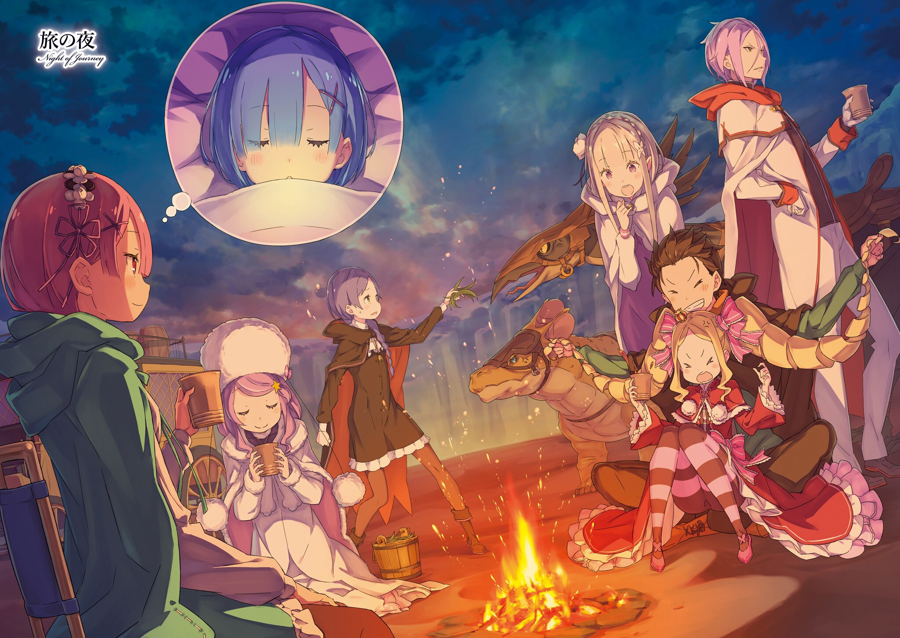

Арка VI: Коридор воспоминаний
Члены лагерей Эмилии и Анастасии отправляются к Сторожевой Башне Плеяд, чтобы встретиться с героем эпохи ведьм - мудрецом Шаулой и спасти жертв Архиепископов Похоти и Чревоугодия. Но смогут ли они пройти через пески Аугрии, которые не подпустили к Башне даже Райнхарда?